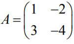
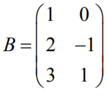
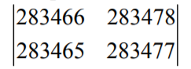
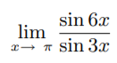
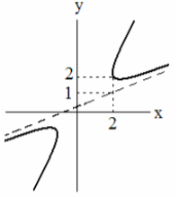

Даны матрицы , . Существует ли произведение A * BT,и, если существует, найдите его.
Вычислить определитель 
Даны векторы: a = (1, 2, 3), b = (1, 0, 2). Найти линейную комбинацию 2a + 3b.
Найти точку пересечения прямых x + y -3 = 0 и 2x + 3y - 8 = 0.
Результат вычисления предела  равен.
Чему равен угловой коэффициент асимптоты гиперболы, изображенной на рисунке? 